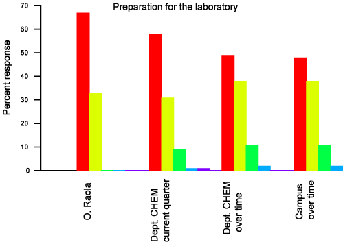

Reflecting about the meaning of having a significantly high percentage in this indicator, I realize that the students really appreciate an instructor that is well prepared and ready to answer most of their questions (or at least to indicate where to look for the answer). Also in my commitment to conduct demos during the lab lectures, it paid to be well prepared, because more than once it happened that at some critical point the demo fails. Since I always had done the experiment ahead of time, I could supply in those cases the missing data. These have been valuable experiences that I will carry over to my future professional practice.